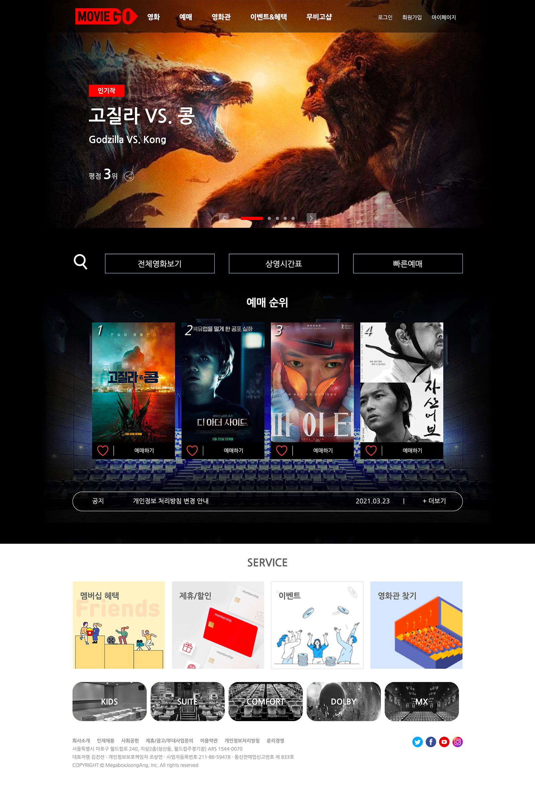

무비고(MOVIE GO)
온라인 스트리밍이 아닌 오프라인 영화관 사이트입니다.
'영화'+'가다' = 가서 영화를 본다는 심플한 단어 조합으로 기억/부르기 쉽도록 네이밍 하였으며,
기존 영화관사이트들을 조사하여 영화관사이트에 꼭 필요한 부분들만 모아 기획하였습니다.
CONCEPT
-
LOGO

이동 방향을 나타내는 화살표를 모티브로 사용자의 시선에 따라 메뉴를 가르키며, '가다'의 단어인 'GO'에 포인트를 주었습니다.
-
COLOR
RED를 단일 포인트컬러로 사용함으로 영화의 웅장함과 영화관의 집중력을 나타내며 페이지별 통일성과 깔끔한 느낌을 줍니다.
-
FONT
나눔고딕 (Nanum Gothic)
1234567890깔끔한 기본 고딕체로 가독성이 좋고 둥근 느낌도 있어 가벼운 느낌이 적으며 전체적인 사이트 분위기에 어울립니다.
Main

메인 블랙에 화이트컬러 폰트사용으로 가독성이 높으며,
포인트 컬러 레드를 사용하여 영화가 가진 힘있는 느낌을 주며 어두운 배경 속에서도 눈에 띕니다.
Sub

메인 화이트에 그레이컬러 폰트사용으로 가독성이 높되 부드러움과 편안한 느낌을 주며,
포인트 컬러 레드를 사용하여 심플함 속에서 포인트가 눈에 잘 띕니다.